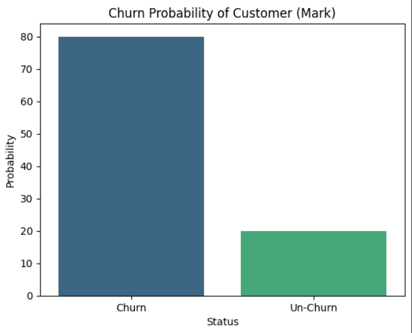
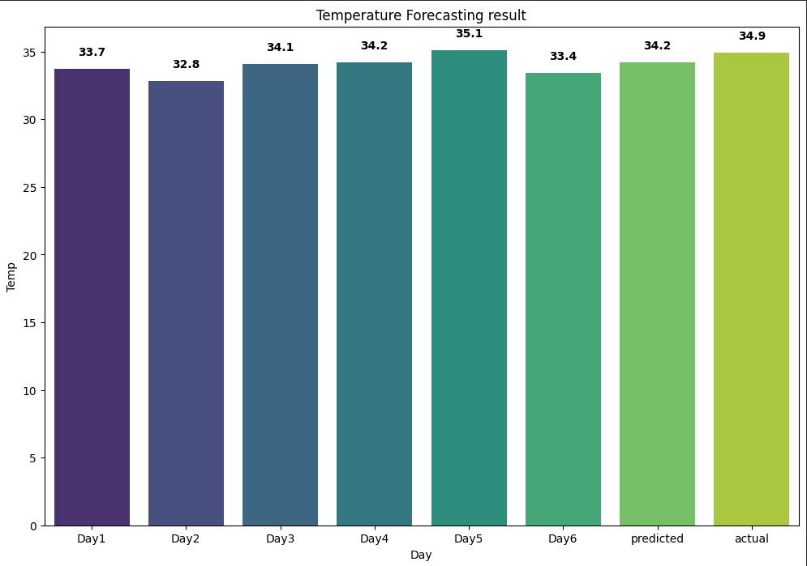
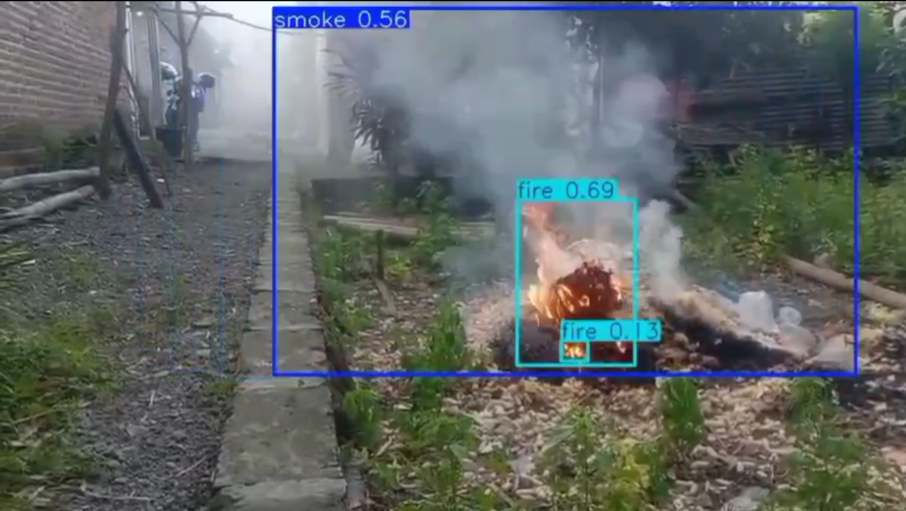
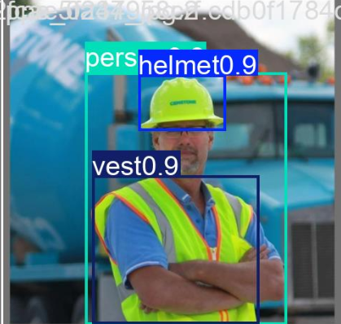
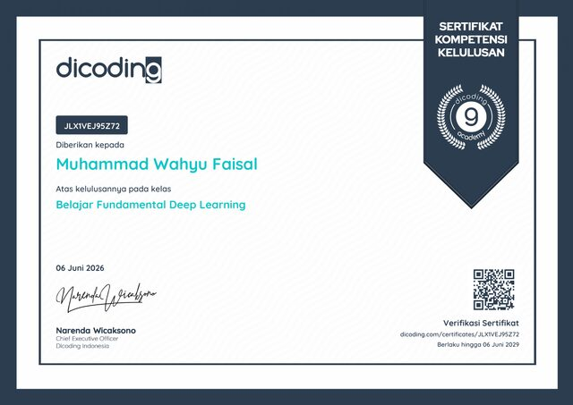
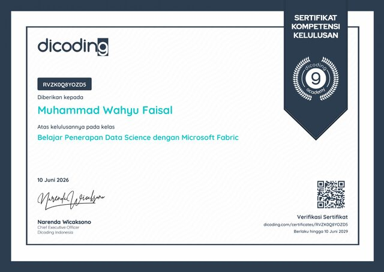
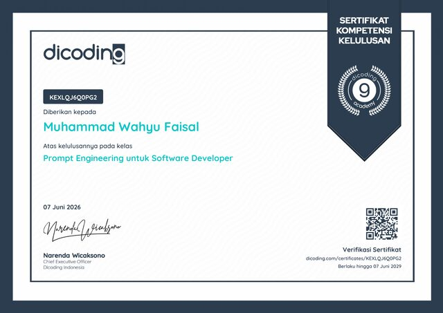
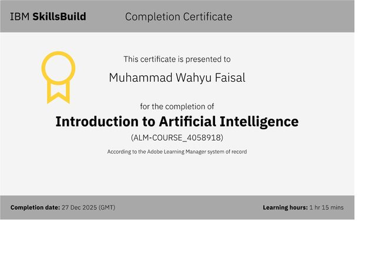
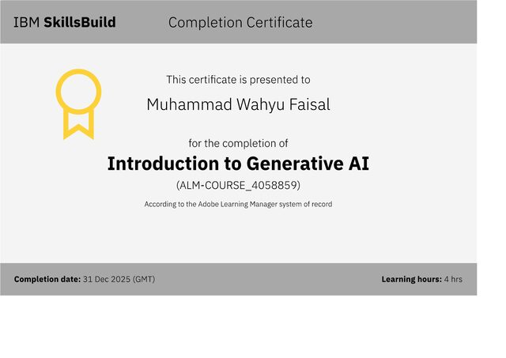
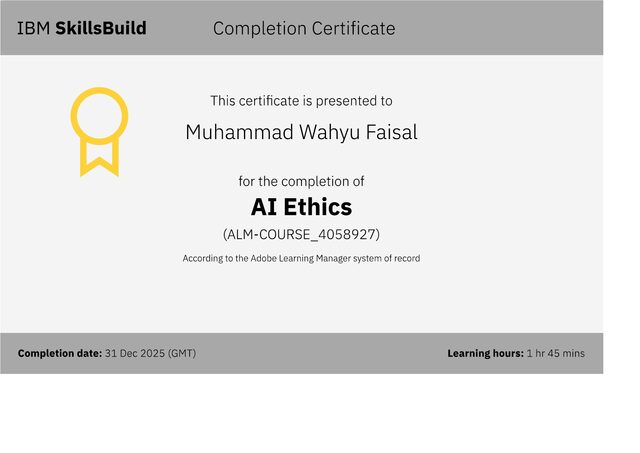

machine-learning conf: 0.87Bank Customer Churn Classification
Predicts which bank customers are likely to churn using EDA, feature engineering, and 5 classical ML models — Random Forest performed best with 86.75% accuracy.
Machine Learning & Computer Vision Engineer
![[Muhammad Wahyu Faisal]](photo/foto profil.png)
I build machine learning and computer vision systems — from model training and object detection to production deployment in real-world applications.
A self-driven Machine Learning & Computer Vision enthusiast with a strong foundation built through hands-on projects and industry-recognized certifications from Dicoding and IBM SkillsBuild. I focus on turning real-world problems — from customer churn to object detection — into working ML solutions.
About Me
My interest in machine learning started with a simple thought: teaching a machine to understand its own task on the fly is genuinely fascinating — and the range of problems it can solve, from healthcare to manufacturing to everyday automation, is what keeps me hooked.
I focus on classical machine learning — classification, regression, clustering, and time-series forecasting — as well as computer vision, particularly image classification and object detection. I'm also currently expanding into NLP and LLMs.
I'm at the start of my professional journey, without prior industry experience — but I've built a solid foundation through structured, hands-on learning via Dicoding and IBM SkillsBuild, applying every concept directly to real projects rather than just theory.
Expertise
A combination of machine learning and computer vision skills to build intelligent systems that work in the real world.
Image classification, object detection, image preprocessing, and dataset annotation using OpenCV — from model training through deployment.
Supervised & unsupervised learning, classification, regression, and clustering, backed by solid model evaluation, feature engineering, and hyperparameter tuning.
CNNs, RNNs, transfer learning, and LSTM networks for vision and sequence tasks, built with PyTorch, TensorFlow/Keras, and Ultralytics YOLO for object detection.
Text preprocessing, TF-IDF, and LSTM-based models for sentiment analysis and other text classification tasks.
Data cleaning and exploratory data analysis (EDA) with Pandas and NumPy, visualized clearly using Matplotlib and Seaborn.
Shipping and serving models with Docker, FastAPI, Streamlit, TensorFlow.js, and TF-Lite, developed and tracked via Google Colab, Kaggle, and GitHub.
Selected Work
A selection of machine learning and computer vision projects I've built and shipped.

machine-learning conf: 0.87Predicts which bank customers are likely to churn using EDA, feature engineering, and 5 classical ML models — Random Forest performed best with 86.75% accuracy.

machine-learning conf: 0.94Forecasting next-day temperature using a univariate time-series model.

computer-vision conf: 0.91Fire & Smoke detection model to help prevent fires in industrial environments.

computer-vision conf: 0.89Personal protective equipment detection for industrial safety environments.
Certificates
Courses and certifications that sharpen my skills in ML & computer vision.

Dicoding · 2026 · Verify →

Dicoding · 2026 · Verify →

Dicoding · 2026 · Verify →

IBM SkillsBuild · 2025

IBM SkillsBuild · 2025

IBM SkillsBuild · 2025
Show more certifications? View all credentials on LinkedIn →
Get In Touch
I'm open to full-time roles, contract work, and freelance projects in machine learning and computer vision.